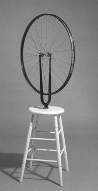

Kinetic
Art
Kinetic
Art  Radical
Art
Radical
Art
Kinetic Art, Chapter I: Movement of Rigid Bodies
"The least you can demand from a painting, is that it hangs still."
Pablo Picasso
"Mondrian didn't like the idea."
Alexander Calder
|

|
Rotation.
Demonstration of the motion detection mechanism of the human eye, by means of a spinning black & white disk (J.F. Schouten). Tinguely/Klein collaboration: spinning
monochromes (high speeds).
|
Translation.Ray Staakman: Moving steel wall. (Early nineteensixties.) |
|
"... 'meta-mechanical paintings', reliefs of a kind, in which simple geometrical shapes painted in the primary colours move about slowly in front of a surface. (. . .) It is theoretically possible to calculate the periodicity of the reliefs. One of them, for instance, ought to repeat the same configuration after about a year, if it ran continuously. But the couplings slip a bit; as a result, the shapes might reach the same position already after two months, or it might not happen for hundreds of years." Hultén, 1955, p. 26.
Tinguely, 1982
". . . puisque le tableau ne se laisse pas terminer, il n'y a qu'à le rendre interminable. Interminable parce que mis en mouvement, et par là perpétuellement recombiné, jamais plus le même, jamais plus "pétrifié" en lui-même. (. . .) Le principe de mise en œuvre sera simple. On peut le résumer ainsi: j'hésitais entre plusieurs configurations, le mouvement va me les donner toutes. Il suffira de découper dans la tôle des formes simples, et de les faire tourner indépendamment en les plaçant sur des axes entraînés par un moteur." Michel Conil Lacoste: Tinguely. L'Énergétique de l'Insolence. Vol. I, p. 14. Paris: Éditions de la Différence, 1989.
|
|
|
Compositions with Movement:
|
|
|
|
Natural Chance: Alexander Calder's "Mobiles à Main".Calder's later "mobiles à main"
use organic-looking shapes, hung in balanced constructions which
can rotate freely. They are very light; the slightest breeze of air
creates (unpredictable) motions.
Hultén thus distinguishes:
A combination of different of different periodic
movements yields an infinite, non-cyclic sequence of configurations,
iff the periods of some of the movements are incommensurable; but
its a deterministic well-ordered process, and it is experienced as
such. In Calder's "mobiles à main", the sequence
is non-deterministic, because the motions are caused by unpredictable
external influences. |
|
| "Métamatic and Métaméchanique – In the work of Jean Tinguely (Swiss, 1925 – ), machines programmed electronically to act with antimechanical unpredictability, jerking erraticly, sometimes scribbling on rolls of paper. Tinguely was influenced by Klee, Miró and Duchamp. His most famous work was Homage to New York, 1960, an assemblage including an old piano, a pram, a meteorological balloon, and various machine parts; it self-destructed with pyrotechnics before a crowd; its remnants now at the Museum of Modern Art, NY. See automata, Dada and Surrealism." [From: Artlex.com] |
Exam question:
This text from Artlex.com contains
one very bad mistake. Discuss it. |
|
||
|
|
|
|
||
|
Footnotes about Tinguely:
|
|
Assignment: Make a computer simulation of Calder's kinetic work (both periods: "mobiles à moteur" and "mobiles à main"). Make a computer simulation Tinguely's work (both periods: "Méta-Malevich" and "fabrication du hasard") Write an essay about what you did and why. Results sofar: Erik Borra (Mobiles à Moteur and Méta-Malevitch) |
|
Thematisation of movement
|
|
Links
|
References
|
Remko Scha – November 22, 2002